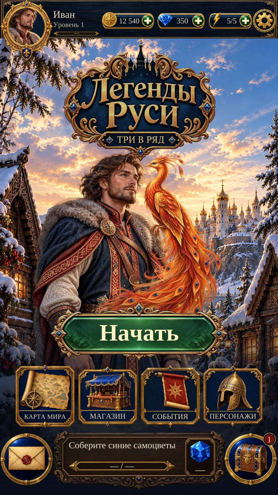

Home R4 — actual Unity review
Home R4 — Unity review
Actual captures of the native Unity Home page, UI revision 7. Exact approved Splash Ivan, logo and Start are reused with independently generated Home controls and a separate Firebird.
The earlier R1 HTML remains a historical offline design. This page displays the current Unity result and the original reference individually.
Actual Unity Play Mode capture · Russian · 941 × 1672
